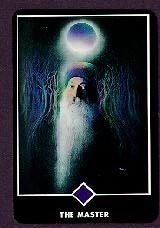
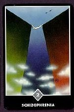
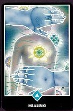
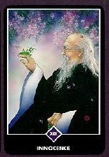
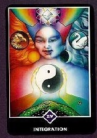
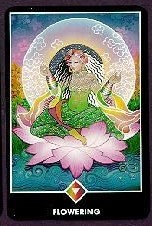

La meditación comienza por separarse de la mente, por ser un testigo. Ésta es la única manera mede separarse de algo. Si estás mirando hacia la luz, naturalmente, una cosa es segura: tú no eres la luz; eres quien está mirando la luz. Si estás observando las flores, una cosa es segura: tú no eres la flor; eres el observador. La contemplación es la clave de la meditación. Contempla tu mente. No hagas nada: ni repetir un mantra, ni repetir el nombre de Dios. Sólo observa lo que la mente hace. No la perturbes, no la obstaculices, no la reprimas; no emprendas nada por tu parte. Limítate a ser un observador. Y el milagro de la contemplación es la meditación. A medida que observes, lenta, lentamente, la mente se vaciará de pensamientos. Pero no te estás quedando dormido; estás cada vez más alerta, más consciente. Cuando la mente se vacía por completo, toda tu energía se transforma en una llama de despertar. Esta llama es el resultado de la meditación. Así que puedes decir que la meditación es otro nombre de la contemplación, del ser testigo, de la observación, sin emitir juicio ni evaluación alguna. Sólo por medio de la contemplación, saldrás de inmediato de la mente...” Osho.
| Nombre de la carta | Descripcion | Foto |
|---|---|---|
| El Maestro | El arcano El Maestro se ha añadido en esta versión del tarot, y se aprecia una imagen del maestro Osho sublimado representando la trascendencia, la realización del ser. La carta no está numerada. |  |
| Schizophrenia | El significado de la carta de Esquizofrenia en el tarot Osho Zen, por medio de la figura que muestra, se encarga de dar un nuevo giro a la vieja idea de encontrarse atrapado entre la espada y la pared. Nos encontramos exactamente en este tipo de situación en el momento en el que nos quedamos atrapados en el aspecto indeciso y dual de la mente. |  |
| Healing | El significado de la carta de Curación en el tarot Osho Zen se enfoca en una época en la cual las heridas se encuentran profundamente enterradas, y de pronto salen a la superficie, listas para ser curadas. La figura que se muestra en esta carta se encuentra desnuda, completamente vulnerable, y abierta al toque amoroso de la existencia. |  |
| Innocence | La inocencia fruto de una experiencia intensa de la vida es muy similar a la de un niño pero carece del aspecto infantil. No es una inocencia fruto de la ignorancia, sino de la consciencia de que siempre quedará casi todo por conocer, el famoso “sólo sé que no sé nada”. |  |
| Integration | Esta carta nos habla de la falta de conocimientos que tienes, tal vez la falta de experiencia que puedes tener porque creas barreras al rededor tuyo, tal vez tienes miedo o prejucios que debes olvidar. Carta invertida: Nos dice que debemos tener cuidado con nuestro mundo, que debemos tener cuidado de las decisiones y acciones que realizamos sin reflexionar en ellas antes |  |
| Floweing | "Recuerda, la meditación te dará cada vez más inteligencia, inteligencia infinita, inteligencia radiante. La meditación te hará más vivo y más sensitivo; tu vida se enriquecerá. |  |